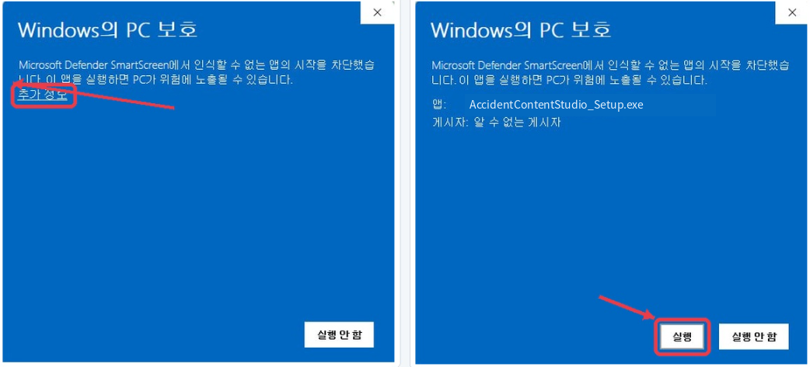

AI 제목·본문 생성
OpenAI API, 로컬 Ollama, 오프라인 템플릿 공급자를 교체할 수 있고 제목·본문 중복을 다단계로 검사합니다.
네이버 블로그·카페용 제목과 본문을 생성하고, 지역·키워드 순환, 예약 실행, 생성 이력, Google Drive 저장, 번호판·얼굴 모자이크까지 하나의 데스크톱 작업 흐름으로 연결한 제안용 구현본입니다.
본 페이지는 수주 제안을 위해 자체 제작한 Windows 데스크톱 프로그램 검토용 프로토타입입니다.
조건 선택부터 사진 검수, AI 생성과 저장까지 한 흐름으로 처리합니다.
원본과 결과를 확대해 비교하고 누락 영역만 빠르게 보완합니다.
분 간격 또는 매일 지정 시각에 자동 생성을 실행합니다.
생성 결과, 사용 조건, 파일 저장 위치와 중복 여부를 조회합니다.
OpenAI API, 로컬 Ollama, 오프라인 템플릿 공급자를 교체할 수 있고 제목·본문 중복을 다단계로 검사합니다.
TXT 프롬프트 관리와 지역·키워드 조합의 전체 순환, 사용 이력과 소진 정책을 관리합니다.
번호판 ONNX 탐지, 얼굴 검출, 수동 보완, BEFORE/AFTER 비교와 검수 완료 상태를 제공합니다.
분 간격·매일 시각 스케줄, 다음 실행 상태, 실행 결과와 실패 로그를 SQLite에 기록합니다.
생성 조건, 제목·본문 해시, 이미지 처리 상태, 결과 경로를 조회하고 중복 생성을 차단합니다.
Drive Desktop 설치와 My Drive 경로를 확인하고 생성 결과를 동기화 폴더에 정리합니다.
미처리 사진이 들어오면 필요한 이유를 설명하고 사진 검수로 연결한 뒤, 완료하면 기존 콘텐츠 입력 상태로 복귀합니다.
지역·키워드·프롬프트와 사진을 한 작업에 묶습니다.
사용 가능한 사진과 검수가 필요한 사진을 즉시 구분합니다.
확대·비교·수동 영역 보완 후 다음 미처리 사진으로 이동합니다.
중복을 확인하고 본문·이미지·메타데이터를 함께 저장합니다.
코드 서명이 적용되지 않은 검토용 설치본에서는 Microsoft Defender SmartScreen 안내가 표시될 수 있습니다. 아래 두 단계로 실행할 수 있습니다.
파란색 Windows의 PC 보호 화면에서 왼쪽의 추가 정보를 누릅니다.
앱 이름이 AccidentContentStudio_Setup.exe인지 확인한 뒤 실행을 누릅니다.

현재 제공 파일은 Windows 설치본을 만들 수 있는 전체 검토 패키지입니다. 실제 클라이언트 전달 시에는 코드 서명·설치 검증을 마친 EXE 설치본 링크로 교체합니다.